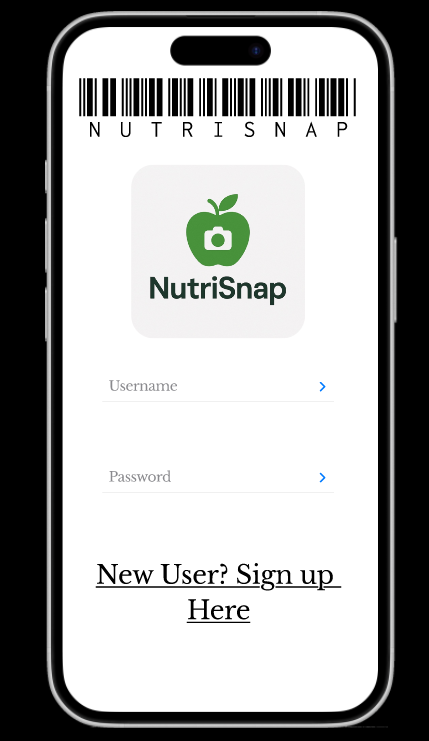
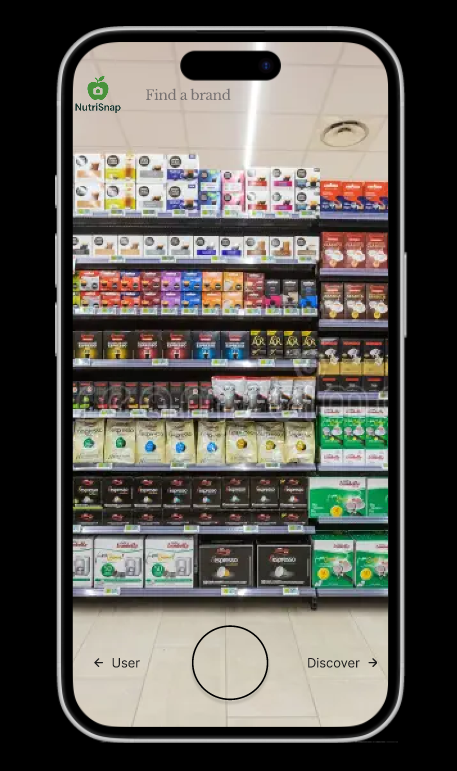
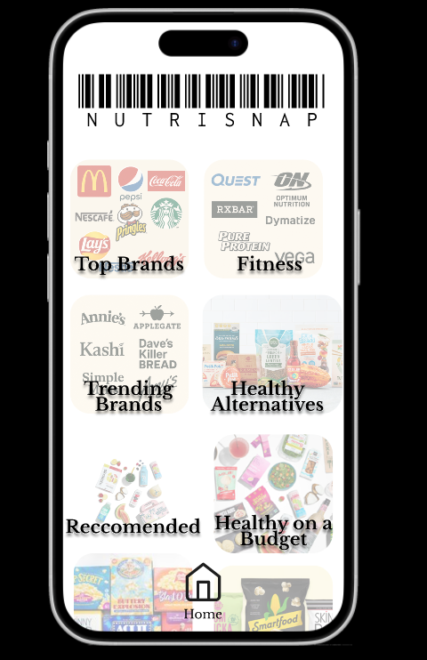
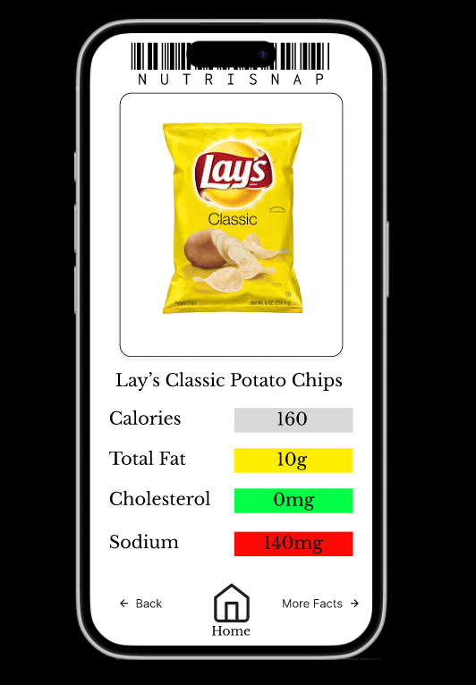
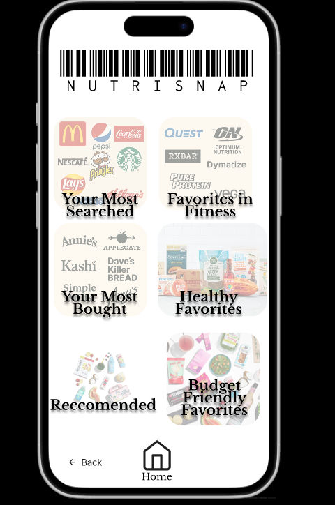
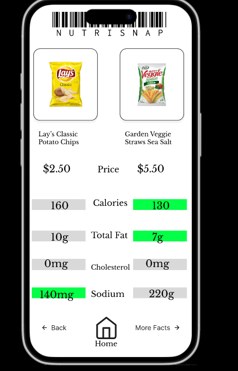

Figma:
Figma was used to create the prototype. Drawing some inspiration from Snapchat, the app features a camera setting where images of products can be taken to better understand products as well as a discovery section to find more reccomended products. User searches are also stored and can be favorited to help reccomend products.






Feedback
We mostly recieved initial feedback about visibility and documentation. These were two focuses we had when going through different stages.